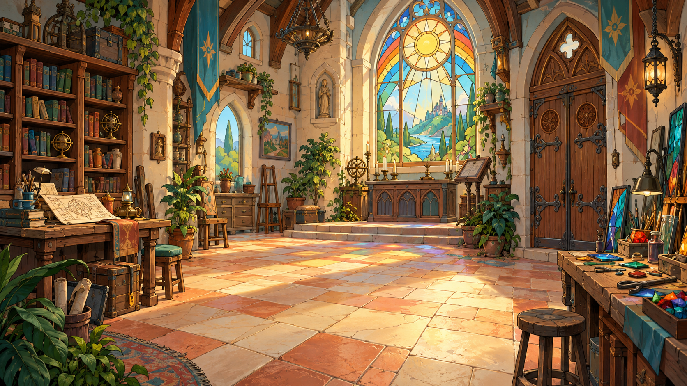

✦ Euer Rätselabenteuer · Klasse 5
Die Regenbogen-
Kapelle
Willkommen in der Regenbogen-Kapelle! ✨ Ihr großes Fenster ist zerbrochen und farblos. Löst alle elf Rätselstationen, um es zu reparieren und die Kapelle wieder zum Leuchten zu bringen. In jedem Raum gibt es eine Hilfekarte 📖 zum Nachschlagen und mindestens ein Minispiel zum Mitmachen!
2 geheimnisvolle Räume11 RätselstationenGemeinsam entdecken
0 / 11 Stationen geschafft
